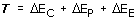

Principio de Conservación El principio de Conservación permite relacionar los cambios en la velocidad de un cuerpo con las fuerzas que éste sufre durante un recorrido Método Se consideran las situaciones inicial y final del recorrido, determinando los valores de las variables asociadas a los diferentes tipos de energía: velocidad (Energía cinética), altura (Energía potencia) y deformación de muelles (Energía elástica) Se hallan los cambios de las energías entre las situaciones inicial y final Se calculan los trabajos realizados por las fuerzas que actúan sobre el cuerpo durante el recorrido. Los trabajos de la fuerza peso y de la fuerza elástica no se calculan porque están incluidos en los cambios de energía potencial y elástica Se iguala el trabajo con la suma de los cambios de energía  Observaciones Solo puede haber una incógnita, cuando haya varias habrá que relacionar longitudes que sean incógnitas con longitudes datos utilizando la geométria |